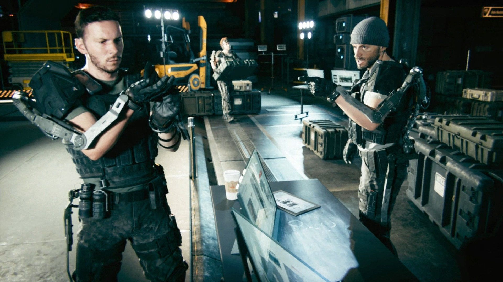

Combat Ready
Three months later, Mitchell is given his first assignment with Atlas, to rescue the Nigerian Prime Minister, Samuel Abidoyo, from the KVA, a large anti-western, anti-technology terrorist organization. The president and a few other technologists are held hostage at a technology summit in Lagos, where the KVA's leader, codenamed Hades executes one of the hostages to assert his control of the situation. Assisted by Nigerian Army Captain Ajani, the team succeed in rescuing the hostages but soon discover that the KVA are not targeting the president, but a technologist who was attending the conference. They pursue the escaping KVA vehicles and recover the technologist, who is taken back to Atlas HQ on Irons' orders. Back in the quarters, Mitchell, Gideon and Joker celebrate their successful op until they are interrupted by Irons, who proposes they have a toast to a job well done. Informing his operatives that this mission has provided Atlas with wonderful opportunities, Irons makes the toast to his men in honor of their service.